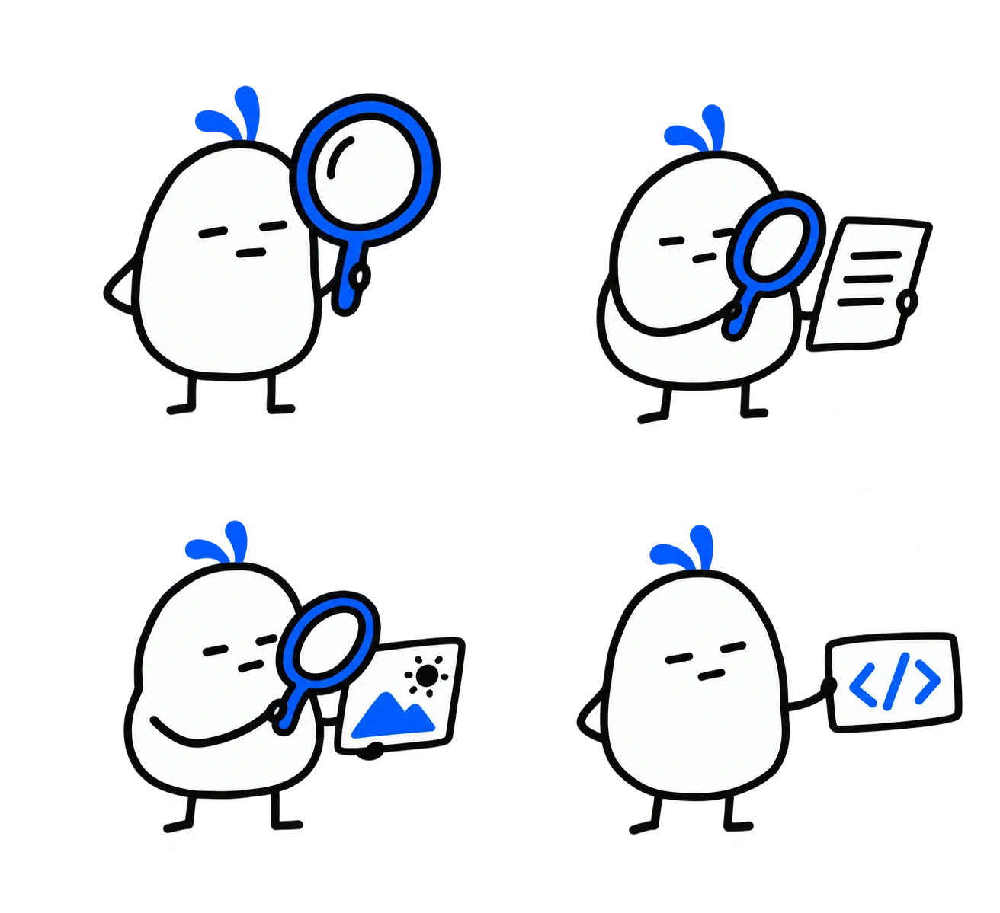
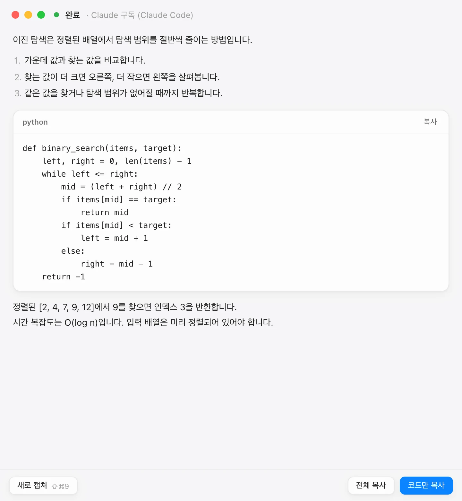

01 — TEXT⌘ ⇧ 0
“이 부분, 무슨 뜻인데.”
앱이나 웹페이지에서 텍스트를 선택하세요. 선택한 내용만 읽고 요청에 맞는 설명을 보여줍니다.
드래그 → 단축키 → 설명 확인 → 직접 복사

다른 창에 옮겨 적을 필요 없이.
지금 보고 있는 곳에서 선택하고,
단축키로 도움을 요청하세요.
앱이나 웹페이지에서 텍스트를 선택하세요. 선택한 내용만 읽고 요청에 맞는 설명을 보여줍니다.
텍스트로 옮기기 어려운 도표나 문제는 화면의 필요한 영역만 캡처해 설명을 받으세요.
문제 텍스트를 먼저 선택하고 단축키를 누르세요. 유효한 코드 블록 하나만 결과 창 없이 클립보드에 넣습니다.
단축키를 먼저 누르고 문제 영역만 드래그하세요. 그 이미지로 코드를 생성해 결과 창 없이 클립보드에 넣습니다.
기본 단축키는 설정에서 변경할 수 있습니다. 코드 복사는 컴파일이나 정답을 보장하지 않습니다.
선택하고, 부르고, 읽고, 가져가기.
네 가지 흐름을 눌러서 살펴보세요.
앱은 메뉴바에.
도움은 필요한 순간에.
궁금한 부분을 드래그합니다.
⌘ ⇧ 0으로 설명을 요청합니다.
결과 창에서 내용을 검토합니다.
필요한 내용만 복사해 가져갑니다.
아래 버튼으로 고정 예시를 살펴보세요.
정렬된 배열에서 원하는 값을 찾고 싶다.
이진 탐색은 왜 O(log n)일까?
탐색 범위가 줄어드는 과정을 설명해줘.
한 번 비교할 때마다 탐색 범위가 절반으로 줄어듭니다. n개의 원소에서 시작하면 약 log₂ n번 비교한 뒤 하나의 후보만 남습니다.
def binary_search(items, target):
left, right = 0, len(items) - 1
while left <= right:
mid = (left + right) // 2
if items[mid] == target:
return mid
if items[mid] < target:
left = mid + 1
else:
right = mid - 1
return -1앱에서는 결과 창 없이 클립보드를 갱신합니다.
붙여넣기는 직접 ⌘V.

앱의 결과 창을 저장된 예시로 렌더링했습니다.
이 예시에는 AI 요청을 사용하지 않았습니다.
macOS 13 이상, Bun, Rust,
Xcode Command Line Tools가 필요합니다.
현재 공개 바이너리 릴리스는 없습니다.
앱은 Tauri로 macOS와 Windows를 함께 지원하도록 만들어졌습니다. Windows는 컴파일만 확인했고 실기기 검증·배포는 아직 완료되지 않았습니다.
자세한 설치 문서git clone https://github.com/SoonGwan/StudyLens.git
cd StudyLens
bun install
bun run app:build
open src-tauri/target/release/bundle/dmg.dmg를 열고 StudyLens를 응용 프로그램 폴더로 옮기세요.
처음 실행 시 개발자 확인 경고가 뜨면 Control-클릭 → 열기를 선택하세요.
처음 실행하면 설정 창이 열립니다. Claude Code, ChatGPT, API 키 중 선택하세요. 이후에는 달 아이콘을 Option-클릭해 설정을 엽니다.
텍스트는 손쉬운 사용, 캡처는 화면 기록 권한이 필요합니다. 업데이트 후 접근 불가라면 새 앱을 다시 등록하고 재실행하세요.
요청은 선택한 연결의 한도를 사용합니다.
StudyLens가 한도를 추가하지는 않습니다.
Continue with ChatGPT로 로그인합니다. 지원되는 계정의 구독 한도 또는 허용된 크레딧을 사용하며, 계정·워크스페이스 정책에 따라 제한될 수 있습니다.
공식 연동 안내 ↗본인의 API 키를 설정합니다. API 요청 비용은 구독과 별도로 발생하고, 사용하는 모델과 요청량에 따라 달라집니다.
API 요금 확인 ↗이 Mac에 설치하고 로그인한 Claude Code CLI로 연결합니다. CLI의 사용 한도를 공유하며, StudyLens는 Claude 인증 정보를 직접 읽거나 저장하지 않습니다.
사용량·비용 안내 ↗세 연결 모두 캡처 → 코드 요청을 지원합니다. Claude 연결은 2026-10-11 사용자 동작 확인이 있었으며 모든 모델·환경 검증을 뜻하지는 않습니다. ChatGPT 오류 시 API 키 결제로 자동 전환하지 않습니다.
직접 선택한 텍스트나 캡처 영역을 요청할 때만 전송합니다. 선택이 없을 때 페이지 전체를 대신 보내지 않습니다. OpenAI 연결은 Responses API로, Claude 연결은 로컬 Claude Code를 거쳐 전송하며 데이터 처리는 선택한 서비스 정책을 따릅니다.
macOS에서 선택 텍스트는 손쉬운 사용, 캡처는 화면 기록 권한이 필요합니다. 캡처 → 코드만 쓴다면 손쉬운 사용은 필요하지 않습니다. 시스템 설정 → 개인정보 보호 및 보안에서 허용하세요. 업데이트 후 기존 권한이 작동하지 않으면 앱을 종료하고 새 앱을 다시 등록·허용하세요. 권한 안내 ↗
영역 캡처 설명과 캡처 → 코드 모두 Claude Code 이미지 입력을 지원합니다. 단축키를 누른 뒤 문제 영역을 선택하세요. 별도의 그림 첨부 설정은 필요 없습니다. 선택 텍스트에 그림을 추가하는 옵션만 OpenAI 연결 전용이며 기본값은 꺼짐입니다.
텍스트 → 코드와 캡처 → 코드 모두 성공 시 유효한 코드 블록 하나만 자동 복사합니다. 결과 창 없이 코드만 받으며 줄바꿈·들여쓰기를 유지합니다. 일반 설명은 결과 창에서 직접 복사합니다. 붙여넣기와 입력은 직접 하며, 취소·오류·코드 없음은 앱의 코드 복사를 실행하지 않습니다.
일부 앱과 보안 입력 영역은 선택 텍스트를 제공하지 않을 수 있습니다. 이때는 영역 캡처를 사용하세요. 단축키 충돌은 설정에서 변경할 수 있습니다. AI 설명과 코드는 직접 검토해야 하며, 진행 중인 시험·감독 환경에서는 정답 대신 개념 복습을 제공하도록 설계되어 있습니다.